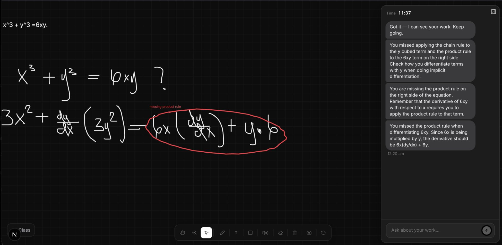

Projects Classify
Classify
A virtual tutor for students. They work a problem out by hand, and Classify reads each step, shows them where they went wrong and guides them through fixing it, instead of just giving the answer. I co-founded it and work on it as a software developer.

A student working through implicit differentiation of x³ + y³ = 6xy. Classify circled the step where it went wrong, labelled it “missing product rule”, and explains in the side panel which rule was missed and why. The student can ask questions about their work in the box at the bottom right.
A tutor over your shoulder, not a red X
Most homework software grades the final answer. A student who gets it wrong learns that they are wrong, but not where their thinking broke down. Classify follows the work as it is written, the way a tutor sitting next to them would.
-
Finds the step that went wrong
Classify reads the handwriting line by line. When a step goes wrong, it circles that step on the page and names the mistake, so the student sees exactly where to look.
-
Guides instead of solving
It explains the idea that was missed and asks the student to try again, rather than handing over the worked answer. The student can ask follow-up questions about their own work at any time.
-
Keeps the teacher in the loop
Each mistake and hint is saved, so a teacher can see where every student struggled across a whole assignment, instead of a spreadsheet of scores.
From handwriting to a hint
Each piece of work passes through four steps. The second one is mine: cleaning up the image so the handwriting can be read.
- WriteA student writes on the canvas or uploads a photo of their work
- PreprocessImage preprocessing reduces noise in the image. I wrote this step.
- ReadHandwriting recognition turns each line into text
- GuideGemini finds the step that went wrong and writes a hint, which appears on the page and in the side panel
What I built
- Co-developed the platform, which combines handwriting recognition, Gemini reasoning and Supabase to guide students through each step of their written work.
- Designed the Supabase relational database for courses, enrollments, assignments, submissions and student profiles.
- Developed the image preprocessing that reduces noise in photos of handwriting before it is read.
- Team
- Six people
- Status
- The core product is built. Tutors are checking its feedback against real teaching practice before a first pilot classroom.
- Grant
- $7,500 through Franklin CREATE! at the University of Georgia